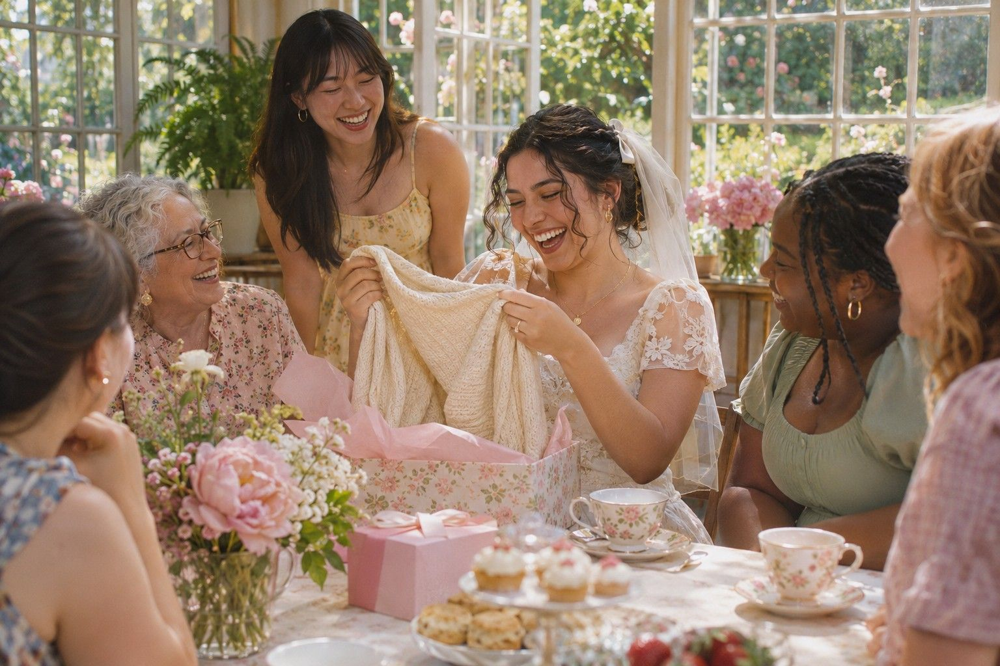
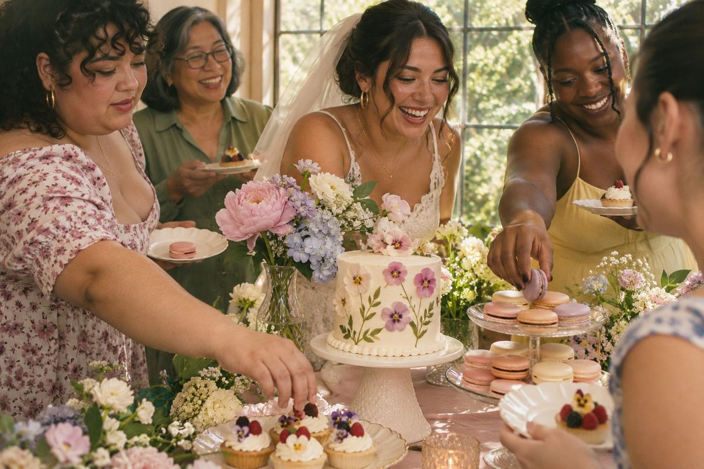
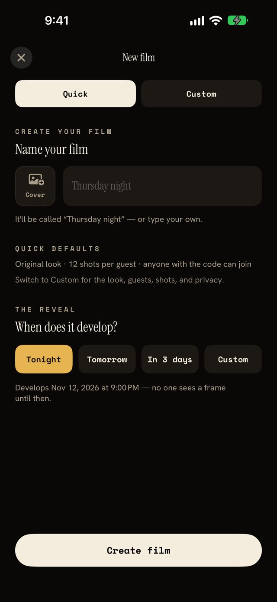

Bridal Shower Photo Ideas: 30 Shots, Backdrops and Displays
A shot list for the day, setups that photograph well and everyone’s photos in one place.

Short answer: The best bridal shower photo ideas mix three things: a short shot list (the details before guests arrive, gift reactions, a three-generation portrait, the bride with each friend group), one photo op set up beside a window, and a display of the couple through the years. Then gather everyone’s photos in one shared place instead of the group chat.
Showers move fast, and by the time the gifts come out, nobody remembers the photos they meant to take. Below is a 30-shot list to hand to a friend, ten photo-op setups that look good in daylight, display ideas built around the couple’s story, lighting tips for bright rooms and a simple way to collect every guest’s pictures.
Bridal shower photo ideas: the 30-shot list
Give this list to one friend (not the bride, and not the host who’s running the games) along with a rough schedule. Canon’s guide to photographing showers makes the same point: get the schedule from the organizer and write a shot list before the party, because it’s easy to miss an important moment if you’re not prepared.
Before guests arrive: the details (6 shots)
- The invitation on the welcome table, with a stem or two borrowed from the flowers.
- The whole room from the doorway, before anyone sits down.
- The dessert table straight on, then one close-up of its best detail.
- One full place setting: plate, napkin, name card and favor.
- The signature drink, poured, in window light.
- The gift table at the start, so you can compare it with the pile at the end.

The guest of honor (6 shots)
- The bride’s first look at the room. If it’s a surprise, stand behind the hosts so you catch her face, not the back of her head.
- The hosts with the bride before the first guests arrive.
- The bride greeting guests at the door, mid-hug.
- Her outfit details: shoes, jewelry, and the sash or flower crown if she’s wearing one.
- A candid of her laughing mid-conversation. Don’t ask her to pose.
- Her engagement ring next to her mother’s or grandmother’s wedding ring.
Gifts and games (7 shots)
- The first gift, shot as a quick run of frames from the moment the paper tears to her reaction.
- The giver’s face as she opens their gift. Shoot the person, not the present.
- The bride reading a card out loud.
- The ribbon bouquet in progress and then finished, if your group makes one from the gift bows.
- Each game’s winning team, holding up their answers.
- A wide shot of the whole table laughing mid-game.
- The game props up close: bingo cards, quiz answers, the paper-dress challenge halfway done.
People and groups (7 shots)
- The full group photo, taken early before anyone leaves. Stand on a sturdy chair and shoot down so every face shows.
- The generations portrait: grandmother, mother and bride, plus a second frame with her future mother-in-law.
- The bride with each friend group: childhood, school, work, hometown. One photo per group.
- The bride with her future in-laws.
- The hosts together, since they planned the whole thing and are rarely in the photos.
- The kids at the shower, doing whatever they’re doing.
- The bride with the guest who traveled farthest.
The end of the shower (4 shots)
- The bride with the mountain of opened gifts.
- Her partner’s arrival at the end, if they’re stopping by.
- Goodbyes at the door, mid-wave.
- The empty room with the flowers still on the tables: the last frame of the day.
10 bridal shower photo op and photo booth ideas
One good photo spot beats three cluttered ones. Each of these photographs well in daylight and can be set up in under an hour.
- The window wall. A plain wall right beside a big window is the best free backdrop in the house. Stand guests so the window is next to them, not behind them, and add one large arrangement on a stand.
- Fabric streamers on a clothing rack. Tie inch-wide strips of chiffon or linen to a rolling garment rack. Because it moves, you can park it wherever the light is best.
- A greenery trellis. A wooden garden trellis woven with faux eucalyptus or ivy costs far less than a flower wall and survives the car ride.
- A giant empty frame. A thrifted frame, spray-painted gold, that guests hold up in pairs or groups of four.
- The couple’s initials in lights. Borrow or rent marquee letters and raise them to hip height so they show in standing photos, not just seated ones.
- A two-tone balloon garland. Stick to two or three shades from the invitation. A garland in every color photographs like a kids’ party.
- The statement chair. One chair with presence (rattan, velvet, anything with a big back) where the bride sits for a photo with each guest. The chair does the styling.
- A props table from their story. Skip generic mustaches. Make props from the couple’s life instead: the city where they met, their dog’s face on a stick, a giant copy of their first concert ticket.
- The overhead toast. Everyone raises a glass over the table while someone shoots from a chair above. No backdrop needed; the table does the work.
- A phone photo booth. A phone on a tripod, a timer or remote, a plain backdrop and soft light from the side. For gear lists, rental costs and more setups, see our wedding photo booth ideas.
Bridal shower photo display ideas: the couple through the years
A display gives guests something to talk about while they wait for the games. Set it up near the dessert table, where everyone ends up anyway.
- A clothesline timeline. One photo per year of the relationship, pinned in order with mini clothespins and a handwritten year under each.
- Then-and-now pairs. A childhood photo of the bride beside a recent one in the same pose.
- Guess the baby photo. Numbered baby photos of the bride and her closest friends; guests write down who’s who.
- The love story in five frames. Where they met, the first date, the first trip, the proposal, the engagement photos.
- A family wedding wall. Parents’ and grandparents’ wedding photos from both sides, in matching frames.
- A map of their places. Photos pinned to every city they’ve lived in or visited together.
- A photo garland of small prints on twine over the gift or dessert table.
- Signable prints. A stack of engagement photos and pens; guests write a note on the back, and the bride goes home with an album of wishes.
No scanner for the old prints? Lay each photo flat near a window in daylight, turn off the flash to avoid glare, and shoot it straight on from directly above.
Lighting tips for daytime shower venues
A daytime shower in a living room, garden room or restaurant is good news for phone cameras, as long as you use the windows well.
- Seat the bride beside a window, not in front of one. Canon notes that when faces are backlit, the camera often underexposes them. Side light from a window flatters everyone opening gifts.
- Outdoors at midday, turn people away from the sun. Canon says facing into the sun means squinting and harsh shadows; turn your subjects around, then brighten the exposure or use fill flash.
- Brighten faces on an iPhone. Apple’s camera guide says to tap where you want to focus, then drag the exposure control next to the focus area up or down. Touch and hold until you see AE/AF Lock to keep the setting for a whole gift-opening sequence.
- Indoors, skip direct flash. Canon warns that direct on-camera flash can wash out skin tones and cast hard shadows. Window light, or open shade on a porch, looks softer and more natural.
- Turn off the overhead lights near windows. Mixing warm bulbs with daylight gives faces two colors at once.
- Use the timer for the group photo, so the person shooting gets to be in it. Apple’s guide: tap Timer, choose 3, 5 or 10 seconds, then tap the shutter.
For more on shooting people at parties, from candids to group shots, see how to take good photos at a party.
Group photos and poses that don’t look stiff
- Take the big group photo first. Do it right after the last guest arrives, before the gifts. Someone always has to leave early.
- Build it in rows. A seated front row with the bride in the middle, a standing row behind, the tallest guests at the back corners. Ask everyone to lean slightly toward her so the group looks connected.
- Shoot several frames in a row. Canon recommends continuous shooting for big groups, to raise the odds of one frame where nobody is blinking. On a phone, take five or six.
- Give hands a job. Canon suggests bubbles, confetti or sparklers to stop people forcing a pose. At a shower, a flower each or raised teacups do the same thing.
- Go guest by guest. Canon’s rule of thumb is two or three photos of each guest over the course of the party, with extra attention for older guests and anyone who traveled a long way.
- Get low for the gifts. Shooting upward from a low position, zoomed out wide, makes the gift-opening chair look like the center of the room, which it is.
How to collect everyone’s photos without the group chat
The group chat is where shower photos go to disappear. They trickle in over a week, get buried between thank-yous and RSVP questions for the bachelorette, and somebody has to save them one by one. Pick a single place before the shower and put it on a card at the welcome table.
- A shared album. Free and familiar. Apple says that starting in iOS 27, Shared Albums support full-resolution sharing, and friends and family can join an album created on iOS 27 or later and contribute photos on the web, even without an Apple Account or Apple device. Photos show up as soon as they’re added, which suits a small shower where you want to see them right away.
- A shared camera. Everyone shoots into one roll from a QR code, and the photos stay hidden until a time you choose. More on that below.
Planning the bachelorette next? Our bachelorette party photo ideas pick up where this list leaves off. And for a side-by-side comparison of sharing options, read the best way to share photos with a group.
A shower film that develops at the wedding
Here’s an idea that makes the shower photos part of the wedding itself. Guests shoot the shower into one shared film, nobody sees a single photo, and the film develops on the wedding weekend. The timing works because the guest lists overlap: the Emily Post Institute puts the ideal shower two months to two weeks before the wedding and says that, normally, anyone invited to a shower is invited to the wedding. The same people open the shower photos together again, a few weeks later.
Prefer instant gratification? Set the film to develop in the last half hour of the shower and look at everything together over dessert.
How to set it up with Filmsera
- Create a film named for the shower. For the reveal, choose Custom and pick the wedding date and time, or the last half hour of the shower.
- Set shots per guest. Quick setup gives each guest 12. Showers are smaller than weddings, so you can raise it to 24 on a free or Party film.
- Pick one film look, such as Instant or Disposable (both among the five free looks). The whole roll shoots in that look, so the shower photos match from the first frame to the last.
- Print the QR code from the invite card on the welcome sign or the favor tags. Guests join by scanning it, tapping the invite link or typing the 8-character code, from any phone’s browser with no app or account, or in the free iPhone app.
- Set up a booth corner. Put an iPhone on a tripod in Filmsera’s Photo Booth, which has six layouts, a 3-2-1 countdown and pose hints. Each result can be shared as a strip, saved for a Story, exported print-ready or added to the film.


At the reveal, the whole film appears at once for everyone in it, each photo tagged with who took it, and a short vertical recap reel builds itself. The limits, as of November 2026: the host needs an iPhone, browser guests shoot photos only, and a free film covers up to 10 guests, so a bigger shower uses a one-time pass for that film. Free films keep photos for 30 days after the reveal and a pass keeps them for a year. If the reveal is weeks away, print the date on the favor tags so nobody forgets. The Filmsera for weddings page covers the rest of the wedding weekend.
Filmsera turns every shower guest’s phone into one shared disposable camera and keeps the roll sealed until the moment you pick, even the wedding day. Get Filmsera on the App Store
FAQ
What photos should you take at a bridal shower?
Cover four things: the details before guests arrive (invitation, dessert table, a place setting), the bride’s reactions as she opens gifts, the people (a full group photo early, a generations portrait, the bride with each friend group and the hosts), and a few candids mid-game. A written list of about 30 shots, handed to one friend, makes sure nothing gets missed.
How do you set up a bridal shower photo booth?
Pick a plain wall next to a window, add one backdrop such as fabric streamers, a greenery trellis or a balloon garland in two or three shades, and set out a small table of props tied to the couple’s story. Put a phone on a tripod with a timer or a booth app that counts down, and tape a mark on the floor where guests should stand.
What can you display at a bridal shower?
Photos of the couple through the years work best: a clothesline timeline with one photo per year, then-and-now pairs, their love story in five frames, or a wall of parents’ and grandparents’ wedding photos. A guess-the-baby-photo board doubles as a game. Set displays near the dessert table, where guests naturally gather and linger.
Who takes the pictures at a bridal shower?
Usually a friend, or a co-host who isn’t running the games, unless you hire a photographer. Give that person a written shot list so they can enjoy the party between shots, and let every other guest contribute through one shared album link or a shared camera QR code. The bride shouldn’t be the one taking photos at her own shower.
How do you get photos from bridal shower guests?
Give everyone one place to put them before the shower starts: a shared album link or a shared camera app on a QR code at the welcome table. Group chats work in a pinch, but photos get buried and saving them one at a time is slow. If you use a shared camera with a delayed reveal, print the reveal date on the favor tags.
Written by the Filmsera team
Filmsera is a shared disposable camera app for iPhone: create a film for your event, let guests join by QR code from the app or their phone's browser, and open the whole roll together at the reveal. Download on the App Store →
Photos in this article are illustrations created for Filmsera, not customer photos. App screenshots are from Filmsera on iPhone.